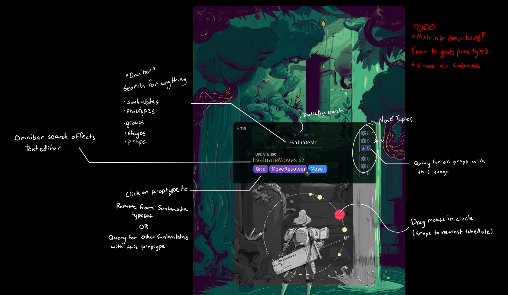
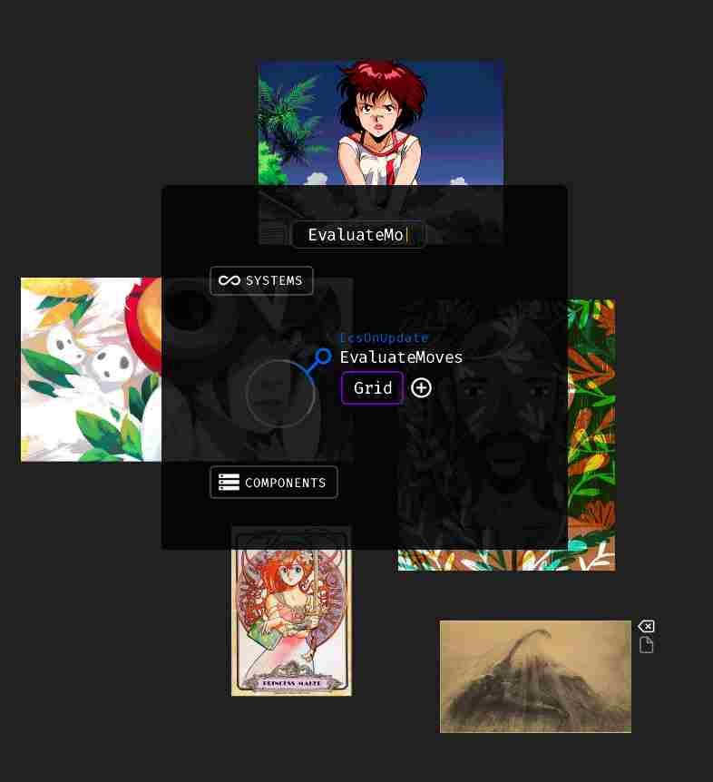

why your game engine sucks
Why your game engine sucks
A rant about the ubiquitous lackluster of modern game engines and my ideas of how to design better tools
Three game engines are traveling through a virtual forest when suddenly a 10x programmer appears and promises to grant them each one wish.
Unreal blurts out "I want to be real." Through decades of effort and stacks of Niagara cloth simulated Benjamins, the programmer stoicly grows Unreal's pixely tadpole body into a mannequin with unlimited poly PBR surfaces puppeteered by blueprint templates and editor widgets. Unreal with its aesthetic splendor steps forth from the digital world into the physical and promptly melts from Moravec's paradox.
Unity says "I want to be popular." The programmer implements a swiss army knife of lovable prefabricated features and conveniences propheted by an ML powered advertising AI. For a time, Unity prospers and shines with the glow of hopeful youth, eventually it becomes ever greedier, the aloof corporate machine demands more and more of its entrenched following. A mob of solar-powered phone gatcha game players decends on the forest and consumes Unity's blackened soul.
Godot ponders for a moment in silence and then says "I want to be free" The programmer replies, "Great you can help me write my new engine I just started!"
From my perspective working on AAA and indie projects, it's obvious that games can be created faster and with higher quality given better editor tools. I see a big part of the problem as fragmentation via multiple discovery duplication of constraint layers... Multiple operating systems, IDEs, a cornicopia of command line tools, asset creation platforms, graphics libraries, rendering interfaces, build and version systems, collaborators (including repo dependencies), and even languages.
I hate to break it to you folks, but we're living in a global cyberspace of scattered towers and wormhaunted libraries of babel (the reality is much worse than that silo analogy you keep hearing about from groupthinkers).
Why are sensory assets engine-agnostic files, while systems and data remain apartheid. You can't write GDScript in Unity, or import your nested prefab as an AActor hierarchy. The amount of wasted effort duplicating functionality is unfathomable to me.
 I could write a n00 page technical report on my thoughts on game engine editors, but I'm busy trying to implement solutions instead.
The Omnibar (universal search interface)
Visual ECS manipulation (drag and drop modules that metaprogram C code)
I would love to improve open source game engine technologies, but I don't have the financial autonomy to pursue that work currently.